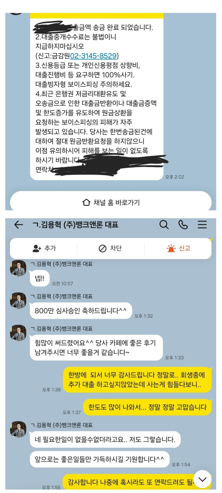

[개인회생자대출] 김용혁 이사님 이현섭 과장님 정말 감사드립니다

대출 조건
재직형태: 직장인
재직기간: 현 직장 2년 재직 중
4대보험: 가입
소득: 연 3,000만 원 이상
신용등급: 8등급
채무내역: 개인회생 포함 채권 외 회생중대출 700만
필요서류: 신분증, 주민등록초본, 건강보험 자격득실확인서, 건강보험료 납부확인서, 변제계획안, 채권자목록
후기
사는 게 힘들어 개인회생까지 신청했지만, 막상 회생을 시작하고 나서도 사는 게 막막한 건 마찬가지였습니다.
7월에 한 번 대출을 받았지만 어린 자녀를 홀로 키우다 보니 또 급하게 자금이 필요한 상황이 생겼습니다. 처음에는 다른 중개업체를 통해 몇 군데 심사를 넣어봤는데 전부 거절됐고, “3개월 정도 지나서 다시 해보라”는 말을 듣고 거의 포기하고 있었습니다.
그러다 늦은 저녁, 혹시나 하는 마음으로 네이버에 다시 검색을 하다가 뱅크앤론을 알게 됐습니다.
‘개인회생자 대출 문의합니다’라고 남겨놓았는데 다음 날 아침 일찍 김용혁 대표님께서 직접 도와주시겠다고 연락을 주셨습니다.
제가 근무 중이라 전화 상담은 어렵고 카톡으로 상담이 가능한지 여쭤봤는데 흔쾌히 가능하다고 해주셨고, 현재 제 상황과 필요한 자금이 얼마인지 물어보셔서 이런저런 사정을 말씀드렸습니다.
당시 개인회생 변제금도 2회 미납된 상태라 사실 저도 대출은 어려울 거라고 생각했습니다.
그런데 아니나 다를까… 정말 놀랍게도 한 번에! 한 번에 승인이 됐습니다.
상담부터 승인까지 정말 일사천리로 진행돼서 오히려 제가 어안이 벙벙할 정도였습니다.
명절까지 끼어 있는 달에 월초인데 통장에는 37만 원밖에 남지 않았고, 아들은 곧 눈 수술을 앞두고 있었습니다. 엄마로서 당장 어떻게 해야 하나 싶을 정도로 정말 막막한 상황이었습니다.
게다가 개인회생에 들어간 채무 중에는 보이스피싱 사기로 인해 생긴 채무도 있어서 사람을 쉽게 믿지 못하게 된 상태였습니다. ‘혹시 또 잘못되면 어떡하지?’라는 걱정도 컸습니다.
그런데 대표님께서 직접 진행해주시고, 승인을 위해 많이 신경 써주셨다는 이야기를 들으니 그동안 혼자 끙끙 앓았던 마음 때문인지 정말 눈물이 났습니다.
물론 대부대출인 만큼 가볍게 생각하지 않고, 필요한 곳에 잘 사용하고 앞으로 성실하게 갚아나가려고 합니다.
혹시라도 나중에 또 정말 급하게 자금이 필요한 상황이 생긴다면 저는 다시 뱅크앤론 김용혁 대표님을 찾을 것 같습니다.
급했던 상황에서 도와주셔서 정말 감사합니다.
https://cafe.naver.com/cityman88/312133